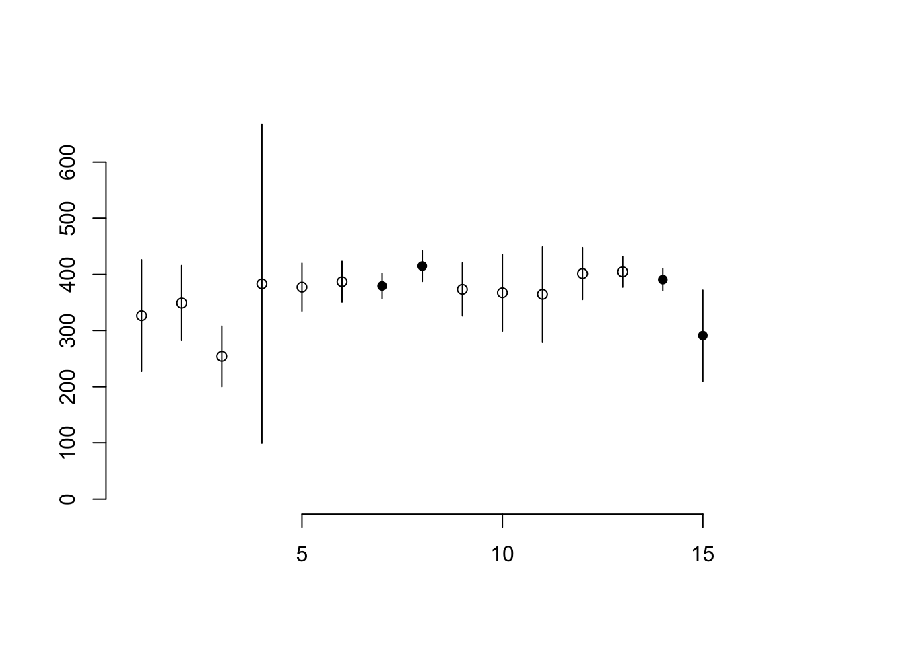
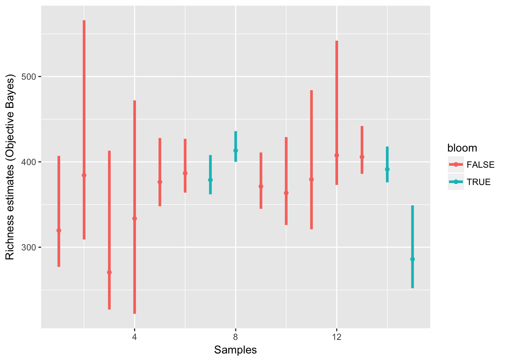

betta-figure.Rmdbetta is useful for formally testing differences between communities with respect to their alpha diversity. However, before ever doing any inferential test, it’s best to try to visualise the difference that you are looking for. Here is a example to show you how to do that using betta_pic.
library(breakaway)frequencytablelist <- lapply(apply(toy_otu_table, 2, table), as.data.frame)
frequencytablelist <- lapply(frequencytablelist, function(x) x[x[,1]!=0,])
ob_results <- lapply(frequencytablelist[c(6:9)], objective_bayes_negbin, answers = T, plot=F, output = F)## [1] "starting iteration 500 of 6000"
## [1] "starting iteration 1000 of 6000"
## [1] "starting iteration 1500 of 6000"
## [1] "starting iteration 2000 of 6000"
## [1] "starting iteration 2500 of 6000"
## [1] "starting iteration 3000 of 6000"
## [1] "starting iteration 3500 of 6000"
## [1] "starting iteration 4000 of 6000"
## [1] "starting iteration 4500 of 6000"
## [1] "starting iteration 5000 of 6000"
## [1] "starting iteration 500 of 6000"
## [1] "starting iteration 1000 of 6000"
## [1] "starting iteration 1500 of 6000"
## [1] "starting iteration 2000 of 6000"
## [1] "starting iteration 2500 of 6000"
## [1] "starting iteration 3000 of 6000"
## [1] "starting iteration 3500 of 6000"
## [1] "starting iteration 4000 of 6000"
## [1] "starting iteration 4500 of 6000"
## [1] "starting iteration 5000 of 6000"
## [1] "starting iteration 500 of 6000"
## [1] "starting iteration 1000 of 6000"
## [1] "starting iteration 1500 of 6000"
## [1] "starting iteration 2000 of 6000"
## [1] "starting iteration 2500 of 6000"
## [1] "starting iteration 3000 of 6000"
## [1] "starting iteration 3500 of 6000"
## [1] "starting iteration 4000 of 6000"
## [1] "starting iteration 4500 of 6000"
## [1] "starting iteration 5000 of 6000"
## [1] "starting iteration 500 of 6000"
## [1] "starting iteration 1000 of 6000"
## [1] "starting iteration 1500 of 6000"
## [1] "starting iteration 2000 of 6000"
## [1] "starting iteration 2500 of 6000"
## [1] "starting iteration 3000 of 6000"
## [1] "starting iteration 3500 of 6000"
## [1] "starting iteration 4000 of 6000"
## [1] "starting iteration 4500 of 6000"
## [1] "starting iteration 5000 of 6000"lower <- unlist(lapply(ob_results, function(x) x[["ci"]][2]))
upper <- unlist(lapply(ob_results, function(x) x[["ci"]][1]))
means <- unlist(lapply(ob_results, function(x) x[["est"]]))
means## Sample6 Sample7 Sample8 Sample9
## 380 376 408 366standard_deviations <- unlist(lapply(ob_results, function(x) x[["semeanest"]]))
## Find how many otus are in the cyanobacteria genus
cyano_nodes <- apply(toy_otu_table[grepl("Cyano", toy_taxonomy), ], 2, function(x) sum(x>0))
cyano_nodes <- cyano_nodes
bloom1 <- toy_metadata[, "bloom2"][6:9]
bloom <- bloom1 == "yes"The following is the default option for plotting. It shows the mean estimates with lines up to +/-2 standard deviations. In this way, it is a visual mimic of the procedure that underpins betta. Feel free to pull apart the source code to optimise it for your purposes. It uses base graphics.
betta_pic(means, standard_deviations, mypch = ifelse(bloom, 16, 1))
The following is a nice option if you would like to use ggplot.
library(ggplot2)
plot_data_frame <- data.frame("index" = 1:4, lower, upper, means, standard_deviations, "bloom"=bloom)
plot_data_frame## index lower upper means standard_deviations bloom
## Sample6.upper 95% 1 411.025 363 380 12.88913 FALSE
## Sample7.upper 95% 2 420.000 363 376 14.46645 TRUE
## Sample8.upper 95% 3 425.000 398 408 7.13514 TRUE
## Sample9.upper 95% 4 403.000 347 366 14.97494 FALSEggplot(plot_data_frame, aes(x = index, y = means, col = bloom)) +
geom_segment(aes(x = index, xend = index, y = lower, yend = upper, col = bloom), lwd = 1.25) +
geom_point(aes(x = index, y = means)) + xlab("Samples") + ylab("Richness estimates (Objective Bayes)")